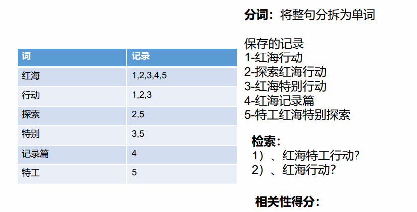
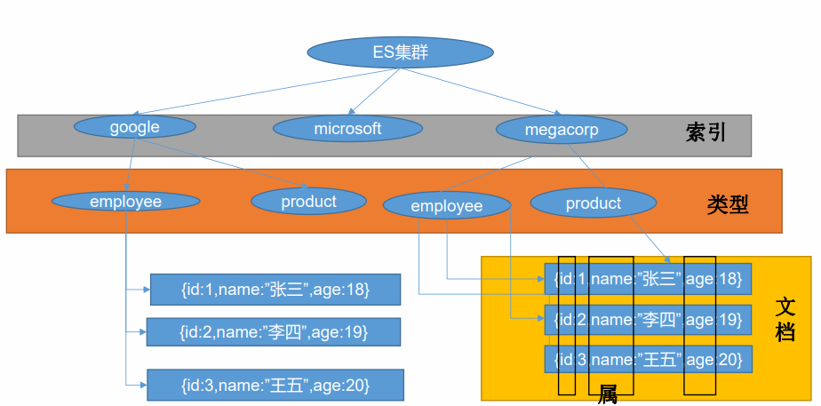
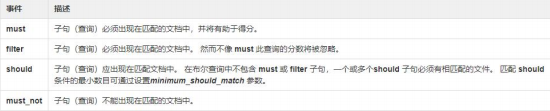
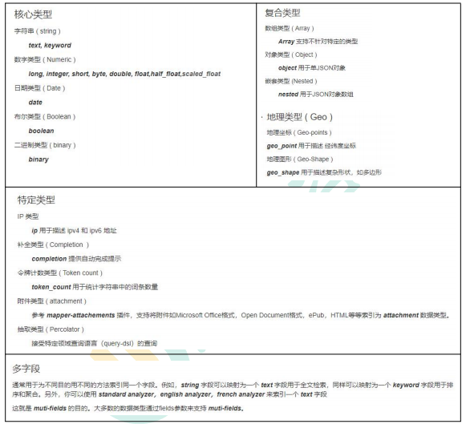
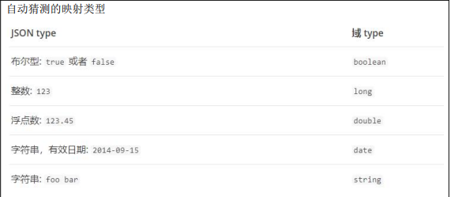
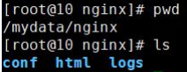

# ElasticSearch - 全文检索
# 简介
https://www.elastic.co/cn/what-is/elasticsearch 全文搜索属于最常见的需求，开源的 Elasticsearch 是目前全文搜索引擎的首选。 它可以快速地储存、搜索和分析海量数据。维基百科、Stack Overflow、Github 都采用它
Elastic 的底层是开源库 Lucene。但是，你没法直接用 Lucene，必须自己写代码去调用它的 接口。Elastic 是 Lucene 的封装，提供了 REST API 的操作接口，开箱即用。 REST API：天然的跨平台。 官方文档：https://www.elastic.co/guide/en/elasticsearch/reference/current/index.html 官方中文：https://www.elastic.co/guide/cn/elasticsearch/guide/current/foreword_id.html 社区中文： https://es.xiaoleilu.com/index.html http://doc.codingdict.com/elasticsearch/0/
# 基础概念
Index（索引）
动词，相当于 MySQL 中的 insert； 名词，相当于 MySQL 中的 Database
Type（类型）
在 Index（索引）中，可以定义一个或多个类型。 类似于 MySQL 中的 Table；每一种类型的数据放在一起；
Document（文档）
保存在某个索引（Index）下，某种类型（Type）的一个数据（Document），文档是 JSON 格 式的，Document 就像是 MySQL 中的某个 Table 里面的内容；
倒排索引机制


# Docker 安装
# 1、下载镜像文件
docker pull elasticsearch:7.4.2 -- 存储和检索数据 |
docker pull kibana:7.4.2 -- 可视化检索数据 |
free -m -- 查看linux可用内存 |
# 2、创建实例
# ElasticSearch
mkdir -p /home/mydata/elasticsearch/config -- 映射容器内部配置文件的目录 | |
mkdir -p /home/mydata/elasticsearch/data -- 映射容器内部数据存储的目录 | |
echo "http.host: 0.0.0.0" >> /home/mydata/elasticsearch/config/elasticsearch.yml -- 配置可以远程访问 | |
chmod -R 777 /home/mydata/elasticsearch/ 保证权限 确保可读可写 |
运行 es
docker run --name elasticsearch -p 9200:9200 -p 9300:9300 \ | |
-e "discovery.type=single-node" \ | |
-e ES_JAVA_OPTS="-Xms64m -Xmx512m" \ | |
-v /home/mydata/elasticsearch/config/elasticsearch.yml:/usr/share/elasticsearch/config/elasticsearch.yml \ | |
-v /home/mydata/elasticsearch/data:/usr/share/elasticsearch/data \ | |
-v /home/mydata/elasticsearch/plugins:/usr/share/elasticsearch/plugins \ | |
-d elasticsearch:7.4.2 |
以后再外面装好插件重启即可；
特别注意：
-e ES_JAVA_OPTS="-Xms64m -Xmx256m" \ 测试环境下，设置 ES 的初始内存和最大内存，否则导 致过大启动不了 ES
# Kibana
docker run --name kibana -e ELASTICSEARCH_HOSTS=http://192.168.61.132:9200 -p 5601:5601 -d kibana:7.4.2 |
http://192.168.61.132:9200 一定改为自己虚拟机的地址
# 初步检索
# 1、_cat _
_GET /_cat/nodes：查看所有节点
GET /_cat/health：查看 es 健康状况 _
_GET /_cat/master：查看主节点
GET /_cat/indices：查看所有索引 show databases;
# 2、索引一个文档（保存）
保存一个数据，保存在哪个索引的哪个类型下，指定用哪个唯一标识
PUT customer/external/1；在 customer 索引下的 external 类型下保存 1 号数据为
PUT customer/external/1 | |
{ | |
"name": "John Doe" | |
} | |
PUT 和 POST 都可以， | |
POST 新增。如果不指定 id，会自动生成 id。指定 id 就会修改这个数据，并新增版本号 | |
PUT 可以新增可以修改。PUT 必须指定 id；由于 PUT 需要指定 id，我们一般都用来做修改 | |
操作，不指定 id 会报错。 |
# 3、查询文档
GET customer/external/1 | |
{ | |
"_index": "customer", // 在哪个索引 | |
"_type": "external", // 在哪个类型 | |
"_id": "1", // 记录 id | |
"_version": 2, // 版本号 | |
"_seq_no": 1, // 并发控制字段，每次更新就会 + 1，用来做乐观锁 | |
"_primary_term": 1, // 同上，主分片重新分配，如重启，就会变化 | |
"found": true, "_source": { // 真正的内容 | |
"name": "John Doe" | |
} | |
} | |
更新携带 ?if_seq_no=0&if_primary_term=1 相当于乐观锁修改的时候判断是否已经被被别人修改了 |
# 4、更新文档
POST customer/external/1/_update -- 此方式会对比原来的数据 如果更新数据一样则不发生任何变化 | |
{ | |
"doc":{ | |
"name": "John Doew" | |
} | |
} | |
或者 | |
POST customer/external/1 -- 此方式不会对比原来的数据 如果更新数据一样则发生变化（版本号增加） | |
{ | |
"name": "John Doe2" | |
} | |
或者 | |
PUT customer/external/1 | |
{ | |
"name": "John Doe" | |
} | |
不同：POST 操作会对比源文档数据，如果相同不会有什么操作，文档 version 不增加 | |
PUT 操作总会将数据重新保存并增加 version 版本； | |
带_update 对比元数据如果一样就不进行任何操作。 | |
看场景: | |
对于大并发更新，不带 update； | |
对于大并发查询偶尔更新，带 update；对比更新，重新计算分配规则。 | |
更新同时增加属性 | |
POST customer/external/1/_update | |
{ | |
"doc": { | |
"name": "Jane Doe", | |
"age": 20 | |
} | |
} | |
PUT 和 POST 不带_update 也可以 |
# 5、删除文档 & 索引
DELETE customer/external/1 | |
DELETE customer |
# 6、bulk 批量 API
POST customer/external/_bulk | |
{"index":{"_id":"1"}} | |
{"name": "John Doe" } | |
{"index":{"_id":"2"}} | |
{"name": "Jane Doe" } | |
语法格式： | |
{ action: { metadata }}\n | |
{ request body }\n | |
{ action: { metadata }}\n | |
{ request body }\n | |
复杂实例： | |
POST /_bulk | |
{ "delete": { "_index": "website", "_type": "blog", "_id": "123" }} | |
{ "create": { "_index": "website", "_type": "blog", "_id": "123" }} | |
{ "title": "My first blog post" } | |
{ "index": { "_index": "website", "_type": "blog" }} | |
{ "title": "My second blog post" } | |
{ "update": { "_index": "website", "_type": "blog", "_id": "123", "_retry_on_conflict" : 3} } | |
{ "doc" : {"title" : "My updated blog post"} } |
bulk API 以此按顺序执行所有的 action（动作）。如果一个单个的动作因任何原因而失败， 它将继续处理它后面剩余的动作。当 bulk API 返回时，它将提供每个动作的状态（与发送 的顺序相同），所以您可以检查是否一个指定的动作是不是失败了。
# 7、样本测试数据
我准备了一份顾客银行账户信息的虚构的 JSON 文档样本。每个文档都有下列的 schema （模式）:
{ | |
"account_number": 0, | |
"balance": 16623, | |
"firstname": "Bradshaw", | |
"lastname": "Mckenzie", | |
"age": 29, | |
"gender": "F", | |
"address": "244 Columbus Place", | |
"employer": "Euron", | |
"email": "bradshawmckenzie@euron.com", | |
"city": "Hobucken", | |
"state": "CO" | |
} |
https://github.com/elastic/elasticsearch/blob/master/docs/src/test/resources/accounts.json?raw =true 导入测试数据
去官网下载测试数据
https://download.elastic.co/demos/kibana/gettingstarted/logs.jsonl.gz
https://download.elastic.co/demos/kibana/gettingstarted/accounts.zip
https://download.elastic.co/demos/kibana/gettingstarted/shakespeare_6.0.json
原文链接：https://blog.csdn.net/u012224510/article/details/86571305
POST bank/account/_bulk
测试数据
docker update bed --restart=always -- 设置docker容器自动启动 |
# 进阶检索
# 1、SearchAPI
ES 支持两种基本方式检索 :
- 一个是通过使用 REST request URI 发送搜索参数（uri + 检索参数）
- 另一个是通过使用 REST request body 来发送它们（uri + 请求体）
# 1）、检索信息
- 一切检索从_search 开始
| GET bank/_search | 检索 bank 下所有信息，包括 type 和 docs |
|---|---|
| GET bank/_search?q=*&sort=account_number:asc | 请求参数方式检索 |
| 响应结果解释： took - Elasticsearch 执行搜索的时间（毫秒） time_out - 告诉我们搜索是否超时 _shards - 告诉我们多少个分片被搜索了，以及统计了成功 / 失败的搜索分片 hits - 搜索结果 hits.total - 搜索结果 hits.hits - 实际的搜索结果数组（默认为前 10 的文档） sort - 结果的排序 key（键）（没有则按 score 排序） score 和 max_score –相关性得分和最高得分（全文检索用） | |
| ------------------------------------------------------------ |
- uri + 请求体进行检索
GET bank/_search | |
{ | |
"query": { | |
"match_all": {} | |
}, | |
"sort": [ | |
{ | |
"account_number": { | |
"order": "desc" | |
} | |
} | |
] | |
} | |
HTTP 客户端工具（POSTMAN），get 请求不能携带请求体，我们变为 post 也是一样的 | |
我们 POST 一个 JSON 风格的查询请求体到 _search API。 | |
需要了解，一旦搜索的结果被返回，Elasticsearch 就完成了这次请求，并且不会维护任何 | |
服务端的资源或者结果的 cursor（游标） |
# 2、Query DSL
# 1）、基本语法格式
Elasticsearch 提供了一个可以执行查询的 Json 风格的 DSL（domain-specific language 领域特 定语言）。这个被称为 Query DSL。该查询语言非常全面，并且刚开始的时候感觉有点复杂， 真正学好它的方法是从一些基础的示例开始的。
- 一个查询语句 的典型结构
{ | |
QUERY_NAME: { | |
ARGUMENT: VALUE, ARGUMENT: VALUE,... | |
} | |
} |
- 如果是针对某个字段，那么它的结构如下：
{ | |
QUERY_NAME: { | |
FIELD_NAME: { | |
ARGUMENT: VALUE, | |
ARGUMENT: VALUE,... | |
} | |
} | |
} |
GET bank/_search | |
{ | |
"query": { | |
"match_all": {} | |
}, | |
"from": 0, | |
"size": 5, | |
"sort": [ | |
{ "account_number": { "order": "desc" } | |
} | |
] | |
} | |
query 定义如何查询， | |
match_all 查询类型【代表查询所有的所有】，es 中可以在 query 中组合非常多的查 | |
询类型完成复杂查询 | |
除了 query 参数之外，我们也可以传递其它的参数以改变查询结果。如 sort，size | |
from+size 限定，完成分页功能 | |
sort 排序，多字段排序，会在前序字段相等时后续字段内部排序，否则以前序为准 |
# 2）、返回部分字段
GET bank/_search -- kinbanan使用查询的时候下面不能回车分开 | |
{ | |
"query": { | |
"match_all": {} | |
}, | |
"from": 0, | |
"size": 5, | |
"_source": ["age","balance"] -- 只看哪个属性 | |
} |
# 3）、match【匹配查询】
基本类型（非字符串），精确匹配
GET bank/_search
{"query": {
"match": {
"account_number": "20"
}}}match 返回 account_number=20 的字符串，全文检索
GET bank/_search
{"query": {
"match": {
"address": "mill road"
}}}最终查询出 address 中包含 mill 或者 road 或者 mill road 的所有记录，并给出相关性得分
# 4）、match_phrase【短语匹配】
将需要匹配的值当成一个整体单词（不分词）进行检索
GET bank/_search | |
{ | |
"query": { | |
"match_phrase": { | |
"address": "mill road" | |
} | |
} | |
} | |
查出 address 中包含 mill road 的所有记录，并给出相关性得分 |
# 5）、multi_match【多字段匹配】
GET bank/_search | |
{ | |
"query": { | |
"multi_match": { | |
"query": "mill", | |
"fields": ["state","address"] | |
} | |
} | |
} | |
state 或者 address 包含 mill |
# 6）、bool【复合查询】
bool 用来做复合查询：
复合语句可以合并 任何 其它查询语句，包括复合语句，了解这一点是很重要的。这就意味 着，复合语句之间可以互相嵌套，可以表达非常复杂的逻辑。
must：必须达到 must 列举的所有条件
GET bank/_search
{"query": {
"bool": {
"must": [
{"match": {
"address": "mill"
}},
{"match": {
"gender": "M"
}}]}}}**should：应该达到 should 列举的条件，如果达到会增加相关文档的评分，** 并不会改变 查询的结果。如果 query 中只有 should 且只有一种匹配规则，那么 should 的条件就会 被作为默认匹配条件而去改变查询结果
GET bank/_search | |
{ | |
"query": { | |
"bool": { | |
"must": [ | |
{ | |
"match": { | |
"address": "mill" | |
} | |
}, | |
{ | |
"match": { | |
"gender": "M" | |
} | |
} | |
], | |
"should": [ | |
{ | |
"match": { | |
"address": "lane" | |
} | |
} | |
] | |
} | |
} | |
} |
must_not 必须不是指定的情况
GET bank/_search
{"query": {
"bool": {
"must": [
{"match": {
"address": "mill"
}},
{"match": {
"gender": "M"
}}],
"should": [
{"match": {
"address": "lane"
}}],
"must_not": [
{"match": {
"email": "baluba.com"
}}]}}address 包含 mill，并且 gender 是 M，如果 address 里面有 lane 最好不过，但是 email 必
须不包含 baluba.com

# 7）、filter【结果过滤】
并不是所有的查询都需要产生分数，特别是那些仅用于 “filtering”（过滤）的文档。为了不 计算分数 Elasticsearch 会自动检查场景并且优化查询的执行。
GET bank/_search | |
{ | |
"query":{ | |
"bool":{ | |
"must":[ | |
{ | |
"match":{ | |
"address":"mill" | |
} | |
} | |
], | |
"filter":{ | |
"range":{ | |
"balance":{ | |
"gte":10000, | |
"lte":20000 | |
} | |
} | |
} | |
} | |
} | |
} |
# 8）、term
和 match 一样。匹配某个属性的值。全文检索字段用 match，其他非 text 字段匹配用 term。
GET bank/_search | |
{ | |
"query":{ | |
"bool":{ | |
"must":[ | |
{ | |
"term":{ | |
"age":{ | |
"value":"28" | |
} | |
} | |
}, | |
{ | |
"match":{ | |
"address":"990 Mill Road" | |
} | |
} | |
] | |
} | |
} | |
} |
# 9)、match 与 match_phrase 匹配短语区别
GET bank/_search | |
{ | |
"query": { | |
"match": { | |
"address.keyword": "Mill Lane" -- 表示这个字段必须一模一样的匹配 | |
} | |
} | |
} | |
GET bank/_search | |
{ | |
"query": { | |
"match_phrase": { | |
"address": "Mill Lane" -- 表示这个字段数据只有有这个短语就进行匹配 | |
} | |
} | |
} |
# 10）、aggregations（执行聚合）
聚合提供了从数据中分组和提取数据的能力。最简单的聚合方法大致等于 SQL GROUP BY 和 SQL 聚合函数。在 Elasticsearch 中，您有执行搜索返回 hits（命中结果），并且同时返 回聚合结果，把一个响应中的所有 hits（命中结果）分隔开的能力。这是非常强大且有效的， 您可以执行查询和多个聚合，并且在一次使用中得到各自的（任何一个的）返回结果，使用 一次简洁和简化的 API 来避免网络往返。
搜索 address 中包含 mill 的所有人的年龄分布以及平均年龄，但不显示这些人的详情。
GET bank/_search
{"query": {
"match": {
"address": "mill"
}},
"aggs": {
"ageAgg": {
"terms": {
"field": "age",
"size": 10
}},
"ageAvg":{
"avg": {
"field": "age"
}},
"balanceAvg":{
"avg": {
"field": "balance"
}}}}size：0 不显示搜索数据aggs：执行聚合。聚合语法如下
"aggs": {
"aggs_name 这次聚合的名字，方便展示在结果集中": {
"AGG_TYPE 聚合的类型（avg,term,terms）": {}
}},
复杂： 按照年龄聚合，并且请求这些年龄段的这些人的平均薪资
GET bank/_search | |
{ | |
"query": { | |
"match_all": {} | |
}, | |
"aggs": { | |
"ageAgg": { | |
"terms": { | |
"field": "age", | |
"size": 100 | |
}, | |
"aggs": { | |
"ageAvg": { | |
"avg": { | |
"field": "balance" | |
} | |
} | |
} | |
} | |
} | |
} |
** 复杂：** 查出所有年龄分布，并且这些年龄段中 M 的平均薪资和 F 的平均薪资以及这个年龄 段的总体平均薪资
GET bank/_search | |
{ | |
"query": { | |
"match_all": {} | |
}, | |
"aggs": { | |
"ageAgg": { | |
"terms": { | |
"field": "age", | |
"size": 100 | |
}, | |
"aggs": { | |
"balAvg":{ | |
"avg": { | |
"field": "balance" | |
} | |
}, | |
"genderAgg": { | |
"terms": { | |
"field": "gender.keyword", | |
"size": 10 | |
}, | |
"aggs": { | |
"genderAvg": { | |
"avg": { | |
"field": "balance" | |
} | |
} | |
} | |
} | |
} | |
} | |
} | |
} |
# 3、Mapping
# 1）、字段类型

# 2）、映射
Mapping（映射）
**Mapping 是用来定义一个文档（document），以及它所包含的属性（field）是如何存储和 索引的。** 比如，使用 mapping 来定义：
哪些字符串属性应该被看做全文本属性（full text fields）。
哪些属性包含数字，日期或者地理位置。
文档中的所有属性是否都能被索引（_all 配置）。
日期的格式。
自定义映射规则来执行动态添加属性
查看 mapping 信息 **：GET bank/_mapping**
修改 mapping 信息 https://www.elastic.co/guide/en/elasticsearch/reference/current/mapping.html

# 3）、新版本改变
Es7 及以上移除了 type 的概念。
关系型数据库中两个数据表示是独立的，即使他们里面有相同名称的列也不影响使用，
但 ES 中不是这样的。elasticsearch 是基于 Lucene 开发的搜索引擎，而 ES 中不同 type
下名称相同的 filed 最终在 Lucene 中的处理方式是一样的。- 两个不同 type 下的两个 user_name，在 ES 同一个索引下其实被认为是同一个 filed，
你必须在两个不同的 type 中定义相同的 filed 映射。否则，不同 type 中的相同字段
名称就会在处理中出现冲突的情况，导致 Lucene 处理效率下降。 - 去掉 type 就是为了提高 ES 处理数据的效率。
- 两个不同 type 下的两个 user_name，在 ES 同一个索引下其实被认为是同一个 filed，
Elasticsearch 7.x
- URL 中的 type 参数为可选。比如，索引一个文档不再要求提供文档类型。
Elasticsearch 8.x
不再支持 URL 中的 type 参数。
解决：
1）、将索引从多类型迁移到单类型，每种类型文档一个独立索引
2）、将已存在的索引下的类型数据，全部迁移到指定位置即可。详见数据迁移
# 1、创建映射
1、创建索引并指定映射 | |
PUT /my-index | |
{ | |
"mappings":{ | |
"properties":{ | |
"age":{ | |
"type":"integer" | |
}, | |
"email":{ | |
"type":"keyword" | |
}, | |
"name":{ | |
"type":"text" | |
} | |
} | |
} | |
} |
# 2、添加新的字段映射
PUT /my-index/_mapping | |
{ | |
"properties":{ | |
"employee-id":{ | |
"type":"keyword", | |
"index":false | |
} | |
} | |
} |
# 3、更新映射
对于已经存在的映射字段，我们不能更新。更新必须创建新的索引进行数据迁移
# 4、数据迁移
先创建出 new_twitter 的正确映射。然后使用如下方式进行数据迁移
POST _reindex [固定写法] | |
{ | |
"source":{ | |
"index":"twitter" | |
}, | |
"dest":{ | |
"index":"new_twitter" | |
} | |
} |
将旧索引的 type 下的数据进行迁移 | |
POST _reindex | |
{ | |
"source":{ | |
"index":"twitter", | |
"type":"tweet" | |
}, | |
"dest":{ | |
"index":"tweets" | |
} | |
} |
# 5、分词
一个 tokenizer（分词器）接收一个字符流，将之分割为独立的 tokens（词元，通常是独立
的单词），然后输出 tokens 流。
例如，whitespace tokenizer 遇到空白字符时分割文本。它会将文本 "Quick brown fox!" 分割
为 [Quick, brown, fox!]。
该 tokenizer（分词器）还负责记录各个 term（词条）的顺序或 position 位置（用于 phrase 短
语和 word proximity 词近邻查询），以及 term（词条）所代表的原始 word（单词）的 start
（起始）和 end（结束）的 character offsets（字符偏移量）（用于高亮显示搜索的内容）。
Elasticsearch 提供了很多内置的分词器，可以用来构建 custom analyzers（自定义分词器）。
# 1）、安装 ik 分词器
** 注意：** 不能用默认 elasticsearch-plugin install xxx.zip 进行自动安装
https://github.com/medcl/elasticsearch-analysis-ik/releases?after=v6.4.2 对应 es 版本安装
学习使用 es 版本和 ik 版本一定要对应不然重启 es 报错
wget url -- wget 加上下载地址 | |
unzip 下载的文件-- unzip -d 压缩到指定目录 压缩文件 | |
rm –rf *.zip | |
可以确认是否安装好了分词器 | |
cd ../bin | |
elasticsearch plugin list：即可列出系统的分词器 |
# 2）、测试分词器
使用默认
POST _analyze | |
{ | |
"text": "我是中国人" | |
} |
使用分词器
POST _analyze | |
{ | |
"analyzer": "ik_smart", "text": "我是中国人" | |
} |
另外一个分词器 ik_max_word
POST _analyze | |
{ | |
"analyzer": "ik_max_word", "text": "我是中国人" | |
} |
请观察结果 能够看出不同的分词器，分词有明显的区别，所以以后定义一个索引不能再使用默 认的 mapping 了，要手工建立 mapping, 因为要选择分词器。
# 3）、自定义词库
修改 /usr/share/elasticsearch/plugins/ik/config/ 中的 IKAnalyzer.cfg.xml/usr/share/elasticsearch/plugins/ik/config
<?xml version="1.0" encoding="UTF-8"?> | |
<!DOCTYPE properties SYSTEM "http://java.sun.com/dtd/properties.dtd"> | |
<properties> | |
<comment>IK Analyzer 扩展配置</comment> | |
<!-- 用户可以在这里配置自己的扩展字典 --> | |
<entry key="ext_dict"></entry> | |
<!-- 用户可以在这里配置自己的扩展停止词字典 --> | |
<entry key="ext_stopwords"></entry> | |
<!-- 用户可以在这里配置远程扩展字典 --> | |
<entry key="remote_ext_dict">http://192.168.128.130/fenci/myword.txt</entry> | |
<!-- 用户可以在这里配置远程扩展停止词字典 --> | |
<!-- <entry key="remote_ext_stopwords">words_location</entry> --> | |
</properties> | |
原来的 xml | |
<?xml version="1.0" encoding="UTF-8"?> | |
<!DOCTYPE properties SYSTEM "http://java.sun.com/dtd/properties.dtd"> | |
<properties> | |
<comment>IK Analyzer 扩展配置</comment> | |
<!-- 用户可以在这里配置自己的扩展字典 --> | |
<entry key="ext_dict"></entry> | |
<!-- 用户可以在这里配置自己的扩展停止词字典 --> | |
<entry key="ext_stopwords"></entry> | |
<!-- 用户可以在这里配置远程扩展字典 --> | |
<!-- <entry key="remote_ext_dict">words_location</entry> --> | |
<!-- 用户可以在这里配置远程扩展停止词字典 --> | |
<!-- <entry key="remote_ext_stopwords">words_location</entry> --> | |
</properties> |
按照标红的路径利用 nginx 发布静态资源，按照请求路径，创建对应的文件夹以及文件，放在 nginx 的 html 下
然后重启 es 服务器，重启 nginx。 在 kibana 中测试分词效果

更新完成后，es 只会对新增的数据用新词分词。历史数据是不会重新分词的。如果想要历 史数据重新分词。需要执行：
POST my_index/_update_by_query?conflicts=proceed |
# 4、重新分配 es 可占用内存，同时扩大虚拟机内存为 3gb
docker run --name elasticsearch-ex -p 9200:9200 -p 9300:9300 \ | |
-e "discovery.type=single-node" \ | |
-e ES_JAVA_OPTS="-Xms64m -Xmx512m" \ | |
-v /home/mydata/elasticsearch/config/elasticsearch.yml:/usr/share/elasticsearch/config/elasticsearch.yml \ | |
-v /home/mydata/elasticsearch/data:/usr/share/elasticsearch/data \ | |
-v /home/mydata/elasticsearch/plugins:/usr/share/elasticsearch/plugins \ | |
-d elasticsearch:7.4.2 |
# Elasticsearch-Rest-Client
# 1）、9300：TCP
- spring-data-elasticsearch:transport-api.jar；
- springboot 版本不同， transport-api.jar 不同，不能适配 es 版本
- 7.x 已经不建议使用，8 以后就要废弃
# 2）、9200：HTTP
- JestClient：非官方，更新慢
- RestTemplate：模拟发 HTTP 请求，ES 很多操作需要自己封装，麻烦
- HttpClient：同上
- Elasticsearch-Rest-Client：官方 RestClient，封装了 ES 操作，API 层次分明，上手简单
最终选择 Elasticsearch-Rest-Client（elasticsearch-rest-high-level-client） https://www.elastic.co/guide/en/elasticsearch/client/java-rest/current/java-rest-high.html
# 1、SpringBoot 整合
<dependency> | |
<groupId>org.elasticsearch.client</groupId> | |
<artifactId>elasticsearch-rest-high-level-client</artifactId> | |
<version>7.4.2</version> | |
</dependency> |
注意这里 springboot 版本会默认配置了 client 部分版本，所以需要重新指定版本，先去点进去 spring-boot-dependencies 里面搜 elastic 版本复制出来，然重新指定
<properties> | |
<java.version>1.8</java.version> | |
<elasticsearch.version>7.4.2</elasticsearch.version> | |
</properties> |
# 2、配置
/** | |
* @author WangXuefeng | |
* @version 1.0 | |
* @date 2021/7/17 13:54 | |
* @description | |
* 1. 导入依赖 | |
* 2. 编写配置，给容器中注入一个 RestHighLevelClient | |
* 3. | |
*/ | |
@Configuration | |
public class MyElasticSearchConfig { | |
// 配置 https://www.elastic.co/guide/en/elasticsearch/client/java-rest/7.x/java-rest-low-usage-requests.html#java-rest-low-usage-request-options | |
public static final RequestOptions COMMON_OPTIONS; | |
static { | |
RequestOptions.Builder builder = RequestOptions.DEFAULT.toBuilder(); | |
builder.addHeader("Authorization", "Bearer " + TOKEN); | |
builder.setHttpAsyncResponseConsumerFactory( | |
new HttpAsyncResponseConsumerFactory | |
.HeapBufferedResponseConsumerFactory(30 * 1024 * 1024 * 1024)); | |
COMMON_OPTIONS = builder.build(); | |
} | |
@Bean | |
public RestHighLevelClient restHighLevelClient(){ | |
RestHighLevelClient client = new RestHighLevelClient( | |
RestClient.builder( | |
new HttpHost("192.168.61.132",9200,"http") | |
) | |
); | |
return client; | |
} | |
} |
# 3、使用
参照官方文档
- 保存索引
@Test | |
public void saveData() throws IOException { | |
// 指定创建索引的名称 | |
IndexRequest request = new IndexRequest("users"); | |
request.id("1"); // 设置 id 默认 string 类型，不设置自动生成 | |
User user = new User(); | |
user.setAge(1); | |
user.setUserName("张三"); | |
user.setGender("男"); | |
// 转为 json | |
String jsonString = JSON.toJSONString(user); | |
request.source(jsonString, XContentType.JSON); // 指定要保存的内容以及格式 | |
// 执行操作 可同步可异步执行，并指定配置 | |
IndexResponse index = client.index(request, MyElasticSearchConfig.COMMON_OPTIONS); | |
System.out.println(index); | |
} | |
@Data | |
class User { | |
private String userName; | |
private String gender; | |
private Integer age; | |
} |
- 查询操作
@Data | |
static class Account { | |
private int account_number; | |
private int balance; | |
private String firstname; | |
private String lastname; | |
private int age; | |
private String gender; | |
private String address; | |
private String employer; | |
private String email; | |
private String city; | |
private String state; | |
} | |
@Test | |
public void searchData() throws IOException { | |
// 1. 创建并指定查询的索引 | |
SearchRequest request = new SearchRequest("bank"); | |
// 2. 指定 DSL, 检索条件 | |
// SearchSourceBuilder 来封装条件 | |
SearchSourceBuilder sourceBuilder = new SearchSourceBuilder(); | |
// 2.1 构造检索条件 | |
// sourceBuilder.query(); | |
// sourceBuilder.from(); | |
// sourceBuilder.size(); | |
// sourceBuilder.aggregation(); | |
sourceBuilder.query(QueryBuilders.matchQuery("address", "mill")); | |
// 聚合操作 | |
// 2.1.1 按年龄值分布进行聚合 | |
TermsAggregationBuilder ageAgg = AggregationBuilders.terms("ageAgg").field("age").size(10); | |
sourceBuilder.aggregation(ageAgg); | |
// 2.1.2 聚合操作 计算平均薪资 | |
AvgAggregationBuilder balanceAvg = AggregationBuilders.avg("balanceAvg").field("balance"); | |
sourceBuilder.aggregation(balanceAvg); | |
// 输出检索条件 | |
System.out.println(sourceBuilder.toString()); | |
System.out.println("========"); | |
// 2.2 封装 sourceBuilder | |
request.source(sourceBuilder); | |
// 3. 执行检索 | |
SearchResponse response = client.search(request, MyElasticSearchConfig.COMMON_OPTIONS); | |
// 3.1 分析结果 | |
System.out.println(response.toString()); | |
SearchHits searchHits = response.getHits(); | |
// 获取数据 | |
SearchHit[] hits = searchHits.getHits(); | |
Arrays.stream(hits).forEach(h -> { | |
// 获取 json 数据 | |
String sourceAsString = h.getSourceAsString(); | |
// 通过 json 解析工具转成 javabean | |
Account account = JSON.parseObject(sourceAsString, Account.class); | |
System.out.println(account); | |
}); | |
// 获取分析数据信息 | |
Aggregations aggregations = response.getAggregations(); | |
for (Aggregation aggregation : aggregations.asList()) { | |
String type = aggregation.getType(); | |
System.out.println("类型"+type); | |
if ("lterms".equals(type)) { | |
Terms agg1 = aggregations.get(aggregation.getName()); | |
agg1.getBuckets().forEach(bucket -> System.out.println("年龄" + bucket.getKeyAsString() + "--- 个数" + bucket.getDocCount() )); | |
} | |
if ("avg".equals(type)) { | |
Avg agg1 = aggregations.get(aggregation.getName()); | |
System.out.println("平均工资" + agg1.getValue()); | |
} | |
} | |
} |
# 附录 - 安装 nginx
随便启动一个 nginx 实例，只是为了复制出配置
docker run -p 80:80 --name nginx -d nginx:1.10
将容器内的配置文件拷贝到当前目录：docker container cp nginx:/etc/nginx . 别忘了后面的点
修改文件名称：mv nginx conf 把这个 conf 移动到 /mydata/nginx 下
终止原容器：docker stop nginx
执行命令删除原容器：docker rm $ContainerId
创建新的 nginx；执行以下命令
docker run -p 80:80 --name nginx \ | |
-v /home/mydata/nginx/html:/usr/share/nginx/html \ | |
-v /home/mydata/nginx/logs:/var/log/nginx \ | |
-v /home/mydata/nginx/conf:/etc/nginx \ | |
-d nginx:1.10 |

- 给 nginx 的 html 下面放的所有资源可以直接访问；